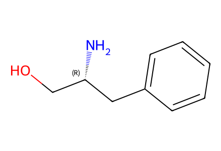
N[C@@H](CO)Cc1ccccc127 个结构、21 个制备事件，覆盖现有 SI 的 3.1–3.15 节。正文缺失；16 的有机锌物种未指定唯一 SMILES。30 是括号中的机理中间体。全部结构为 canonical isomeric SMILES，仍待独立化学复核。
数据 JSON · 逐步 CSV · 路线序列 · 14 项 HRMS 核对 · SDF
15 → 17 → 14 → 19 + 20 → 13 + 21 → 22 → 12 → 23 → 11 → 27 → 29 → 10 → [30] → 31 → 32 + boronate → 1
另存 S1→15 的引用制备、22→23 一锅替代路线和 27→28 表征支线。
| 事件 | 连接 | 产率 | 范围 |
|---|---|---|---|
| E01 | S1 → S2 | 90% | reference_preparation |
| E02 | S2 → S3 | 95% | reference_preparation |
| E03 | S3 + S4 → S5 | 70% | reference_preparation |
| E04 | S5 → S6 | 85% | reference_preparation |
| E05 | S6 → 15 | 80% | reference_preparation |
| E06 | 15 → 17 | 53% | main_route |
| E07 | 17 → 14 | 66% | main_route |
| E08 | 14 → 19 | 77% | main_route |
| E09 | 19 + 20 → 13 | 50% | main_route |
| E10 | 13 + 21 → 22 | 85% | main_route |
| E11 | 22 → 12 | 88% | main_route |
| E12 | 12 → 23 | 72% | main_route |
| E13 | 23 → 11 | 70% | main_route |
| E14 | 11 → 27 | 62% | main_route |
| E15 | 27 → 29 | 70% | main_route |
| E16 | 29 → 10 | 56% | main_route |
| E17 | 10 → 31 | 32% | main_route |
| E18 | 31 → 32 | 78% | main_route |
| E19 | 32 + boronate-final → 1 | 65% | main_route |
| E20 | 22 → 23 | 55% | alternative_one_pot |
| E21 | 27 → 28 | 90% | characterization_branch |

N[C@@H](CO)Cc1ccccc1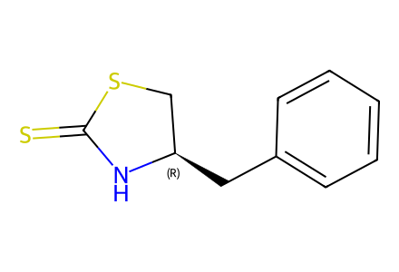
S=C1N[C@H](Cc2ccccc2)CS1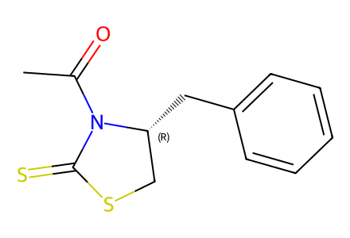
CC(=O)N1C(=S)SC[C@H]1Cc1ccccc1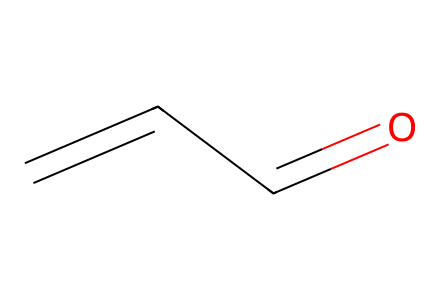
C=CC=O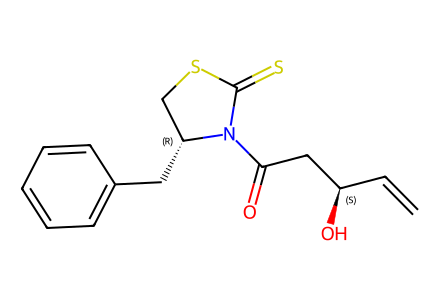
C=C[C@@H](O)CC(=O)N1C(=S)SC[C@H]1Cc1ccccc1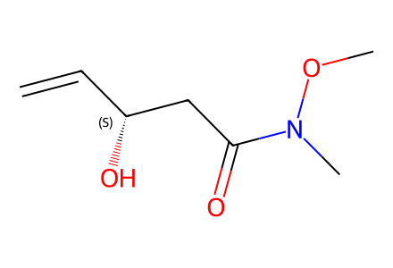
C=C[C@@H](O)CC(=O)N(C)OC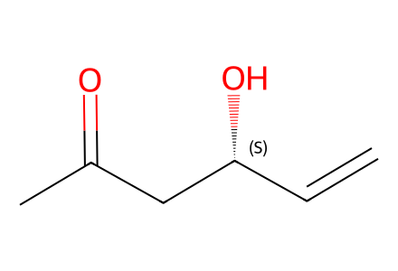
C=C[C@@H](O)CC(C)=O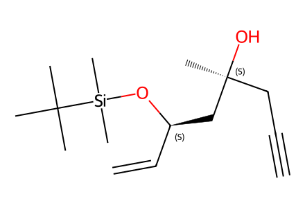
C#CC[C@](C)(O)C[C@@H](C=C)O[Si](C)(C)C(C)(C)C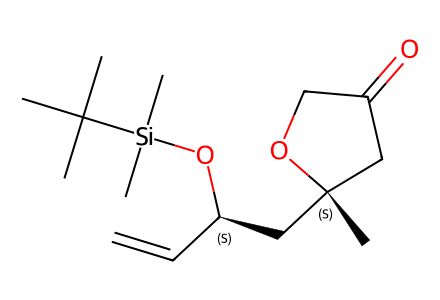
C=C[C@H](C[C@@]1(C)CC(=O)CO1)O[Si](C)(C)C(C)(C)C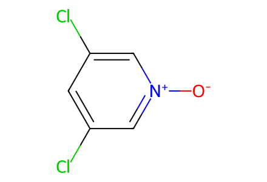
[O-][n+]1cc(Cl)cc(Cl)c1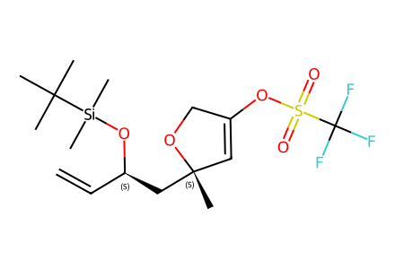
C=C[C@H](C[C@@]1(C)C=C(OS(=O)(=O)C(F)(F)F)CO1)O[Si](C)(C)C(C)(C)C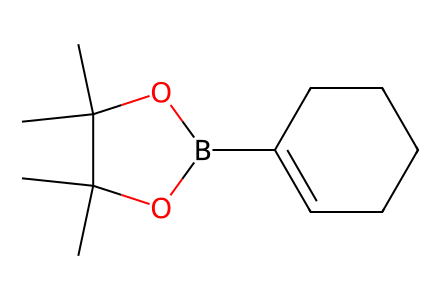
CC1(C)OB(C2=CCCCC2)OC1(C)C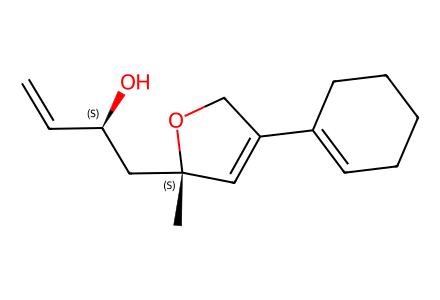
C=C[C@@H](O)C[C@@]1(C)C=C(C2=CCCCC2)CO1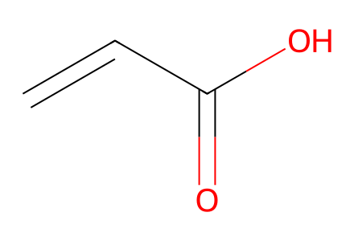
C=CC(=O)O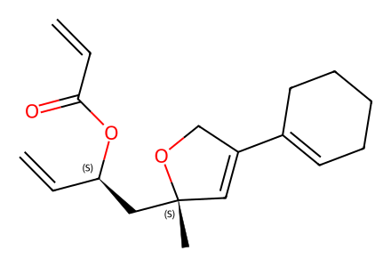
C=CC(=O)O[C@H](C=C)C[C@@]1(C)C=C(C2=CCCCC2)CO1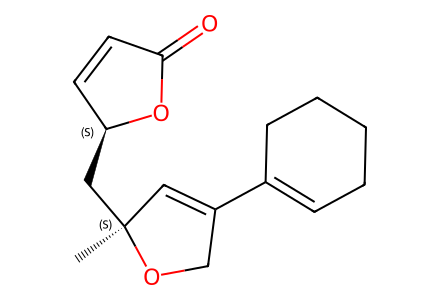
C[C@]1(C[C@H]2C=CC(=O)O2)C=C(C2=CCCCC2)CO1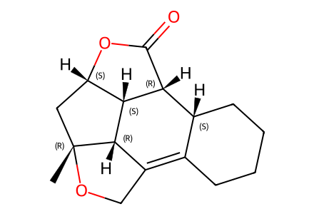
C[C@@]12C[C@@H]3OC(=O)[C@H]4[C@@H]3[C@@H]1C(=C1CCCC[C@H]14)CO2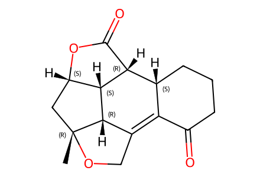
C[C@@]12C[C@@H]3OC(=O)[C@H]4[C@@H]3[C@@H]1C(=C1C(=O)CCC[C@H]14)CO2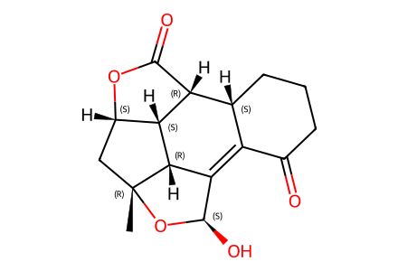
C[C@@]12C[C@@H]3OC(=O)[C@H]4[C@@H]3[C@@H]1C(=C1C(=O)CCC[C@H]14)[C@@H](O)O2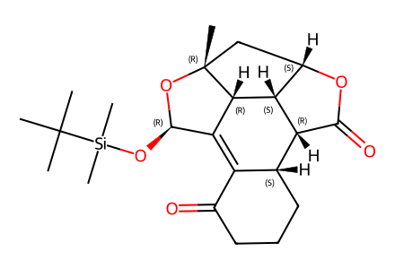
CC(C)(C)[Si](C)(C)O[C@H]1O[C@]2(C)C[C@@H]3OC(=O)[C@H]4[C@@H]3[C@@H]2C1=C1C(=O)CCC[C@H]14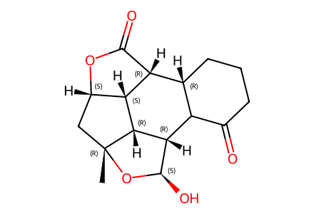
C[C@@]12C[C@@H]3OC(=O)[C@H]4[C@@H]3[C@@H]1[C@H](C1C(=O)CCC[C@H]14)[C@@H](O)O2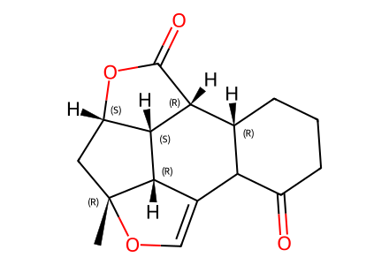
C[C@@]12C[C@@H]3OC(=O)[C@H]4[C@@H]3[C@@H]1C(=CO2)C1C(=O)CCC[C@H]14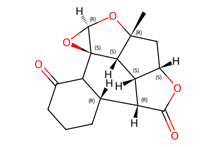
C[C@@]12C[C@@H]3OC(=O)[C@H]4[C@@H]3[C@@H]1[C@]1(O[C@H]1O2)C1C(=O)CCC[C@H]14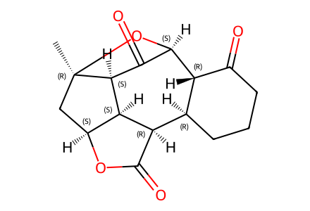
C[C@]12C[C@@H]3OC(=O)[C@@H]4[C@@H]5CCCC(=O)[C@H]5[C@H](O1)C(=O)[C@H]2[C@@H]43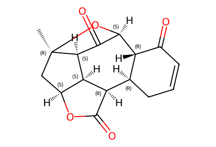
C[C@]12C[C@@H]3OC(=O)[C@@H]4[C@@H]5CC=CC(=O)[C@H]5[C@H](O1)C(=O)[C@H]2[C@@H]43
C=C(C)B1OC(C)(C)C(C)(C)O1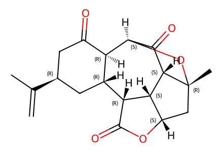
C=C(C)[C@H]1CC(=O)[C@@H]2[C@@H](C1)[C@H]1C(=O)O[C@H]3C[C@@]4(C)O[C@@H]2C(=O)[C@H]4[C@@H]13